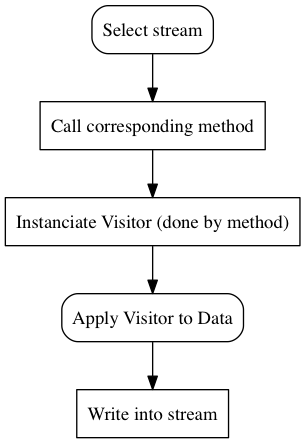
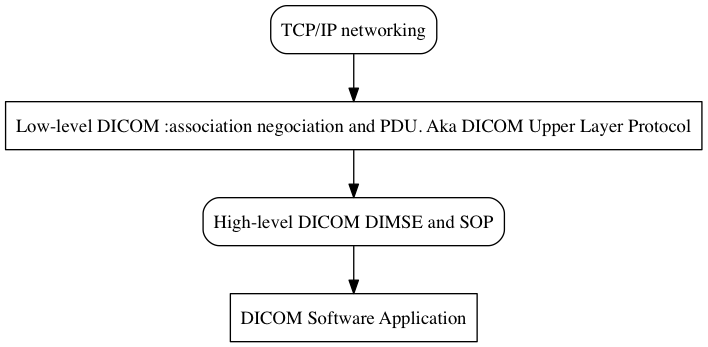

Developer documentation¶
Welcome to Odil’s developer documentation, feel free to comment and suggest enhancements. Should you need any definition, you can find them here.
This documentation will cover the following concepts:
- How to use, access and browse the dictionary
- Error management: exceptions
- Types Odil uses for tags and data in general
- How to read/write a file
- Transmit data through the network
- Different DICOM protocols’ implementations
The dictionary¶
Odil uses a dictionary to make an associations and store elements. This dictionary is actually a map which contains ElementsDictionary. Those ElementsDictionary are a bound type std::map<ElementsDictionaryKey, ElementsDictionaryEntry>. From the dictionary we can get any element’s Name, Tag, Key, VR (Value Representation) or VM (Value Multiplicity).
ElementsDictionaryKey is a class that has 3 types defined in the enum Type inside itself. It can be built from a tag, a string or without any argument, which results in the creation of an ElementsDictionaryKey of type “none”.
As stated in the DICOM Documentation , a Tag is :
A unique identifier for an element of information composed of an ordered pair of numbers (a Group Number followed by an Element Number), which is used to identify Attributes and corresponding Data Elements.
ElementsDictionaryEntry is a struct containing 4 strings: name, keyword, vr (type) and vm (multiplicity) which can all be set into the constructor, and will be assigned to an empty string if they have not been.
Exceptions¶
Odil relies on exceptions for error handling.
The class odil::Exception inherits from std::exception, and only contains the message passed to the constructor, which is returned whenever the exception is raised.
The Exception class is inherited by several classes, such as AssociationAborted, AssociationRejected and AssociationReleased, which are all related to association negociation.
AssociationAborted: contains a source of the error and a reason, with the message set as “Association aborted”.AssociationRejected: is a struct which message is set by default to “Association rejected” but can be changed in the constructor, it also contains three private unsigned chars :_result,_sourceand_reason.AssociationReleased: is just anExceptionwith its message set as “Association released”.
Data types¶
Instead of the 31 data types DICOM offers, Odil simplifies it by reducing this number to 5:
- Integer (
int64_t)- Real (
double)- String
- Binary
- DataSets
You can find them in the classe Value, which contains the enum containing all Type values and methods to access them. NB: All of them are arrays, even if it is empty or contains only one element! Also, everything is explicitly typed.
Read/write data¶
To read and write data, Odil relies mainly on two classes: Reader and Writer.
The Reader class¶
This class can read Tag s, DataSet s, Element s or files.
To do so, it uses a private Visitor that allows to visit the target data. It is instanciated in function of the type of data we want to read, when it is needed.
The Writer class¶
Using this class, Odil allows you to write the same type of Data the Reader Class allows you to read (DataSet s, Tag s, Element s or Files).
The writer class proposes two constructors:
/// @brief Build a writer.
Writer(
std::ostream & stream,
ByteOrdering byte_ordering, bool explicit_vr,
ItemEncoding item_encoding=ItemEncoding::ExplicitLength,
bool use_group_length=false);
/**
* @brief Build a writer, derive byte ordering and explicit-ness of VR
* from transfer syntax.
*/
Writer(
std::ostream & stream,
std::string const & transfer_syntax,
ItemEncoding item_encoding=ItemEncoding::ExplicitLength,
bool use_group_length=false);
The writer’s behaviour can be described by the following flowchart:
Reading/Writing into a file¶
To read/write into a file, you can use the static methods odil::Reader::read_file(std::istream &, bool) and odil::Writer::write_file(DataSet const &, std::ostream &)
You can find an example of how to proceed with DICOM directory creation in Odil’s tests code.
Data transmission¶
As far as data transmission is concerned, Odil does not handle TCP/IP requests, but instead it manages connexion between remote devices through association negociation. An association is a network data exchange between a Service Class Provider or SCP and a Service Class User or SCU.
As you know, DICOM entities are identified by application and not by devices, so there is a need to give every application it’s own label to differenciate every single one of them. DICOM sets this parameter as the Application Entity Title.
Odil manages that in the AssociationParameters. It is necessary to set a called AETitle and a calling AETitle. Here’s an example of association parameter settings you can find in Odil’s examples:
association.update_parameters()
.set_calling_ae_title("myself")
.set_called_ae_title("REMOTE");
The methods set_calling_ae_title and set_called_ae_title return the AssociationParameters after setting their respective attribute to the value you passed as argument to allow method chaining.
You can also create an association through the copy constructor, which will return an unassociated association with the same parameters as the old one you used to create your new association. You will then have to try to associate it via the odil::Association::associate() method.
To establish an association, you don’t only need to set AE’s identities, but you need to set the presentation contexts they are going to use to communicate. A presentation context (or PC) lays down ground rules on the data transmission that will occur between the client (usually the calling AE) and the server (usually the called AE). This is how the communicating apps are going to negociate what parts of the standard they are going to share, and what they are going to communicate on. The information will be cut down between an essential (DICOM abstract syntax) and a negociable part (DICOM Transfer syntax). DICOM offers many Abstract Syntax UIDs, which Odil implements in the odil::registry namespace.
So the first step of data transmission is the Association establishment, which goes this way:
Association Establishment¶
According to DICOM is easy, 99% of network problems you’ll encounter while working on DICOM networking, will occur during this A-ASSOCIATE-RQ step. If you want more information on DICOM’s way to implement A-ASSOCIATE-RQ , you can browse DICOM standard. Odil stores the result of the presentation context negotiation directly inside of the Presentation Context (odil::AssociationParameters::PresentationContext) , in this enum:
enum class Result
{
Acceptance = 0,
UserRejection = 1,
NoReason = 2,
AbstractSyntaxNotSupported = 3,
TransferSyntaxesNotSupported = 4,
};
DICOM PDU (Protocol Data Units)¶
This diagram shows the main steps of DICOM communication between two Application Entities.
On this Diagram(above), dashed lines show failures in the process, for which Odil will throw an error. For each of those steps, the AEs will be in a different state. Should you need it, you can find more information about those states here.
Here is Odil’s implementation of them in odil::dul::StateMachine::State:
enum class State
{
Sta1,
Sta2, Sta3, Sta4, Sta5,
Sta6,
Sta7, Sta8, Sta9, Sta10, Sta11, Sta12,
Sta13
};
Protocols¶
Most of DICOM communication is made through messages, which Odil implements in the odil::message namespace.
As you can see in the diagrams contained in this documentation, most messages can be split into two categories: requests and responses hence Odil chose to implement messages through inheritance of a Request or a Response base class.
In the same way, odil implements SCUs and SCPs for every type of protocol below. Each and everyone of them inherits the base class SCU or SCP.
Echo¶
C-Echo has been nicknamed “DICOM ping”, because using a TCP ping only gives us informations about the TCP connection between two devices, but does not tell us if the distant machine is running any DICOM software at all. C-Echo uses DICOM procedures, and then gives us the information
Store¶
DIMSE services dealing with composite data are called “DIMSE-C” services; and DIMSE services dealing with normalized data are called “DIMSE-N” services. The “C” and “N” are often prefixed to the service name; for example, the C-Store service stores DICOM images (composite objects). Similarly, DIMSE messages with service requests are labeled with an “Rq” suffix (e.g., C-Store-Rq is what a CT scanner sends to a digital archive, requesting image storage). DIMSE messages with service responses are labeled with an “Rsp” suffix (e.g., C-Store-Rsp is used by an archive to reply to the scanner).
In Odil, you need to instanciate the Store SCU by providing an association between the AEs and SCP by providing an association, and eventually a callback, which will be used to treat the requests it will receive and then send a C-Store-Response under the form of a odil::message::CStoreResponse.
Find¶
In a way, C-Find is similar to C-Echo, with the SCU (or calling AE) sending a request to the SCP(or called AE), which treats it before sending a response.
Odil allows you to instanciate a FindSCP or FindSCU to handle C-Find based operations. Both can be instanciated from the association linking the calling AE and the called AE and an optional parameter. The optional parameter for the FindSCU is the callback which will be used by the FindSCU object throught the method odil::FindSCU::find(Dataset const &, Callback).
You can find an example of how to use a FindSCU in odil’s find example.
Get¶
C-GET Protocol allows you to fetch and select